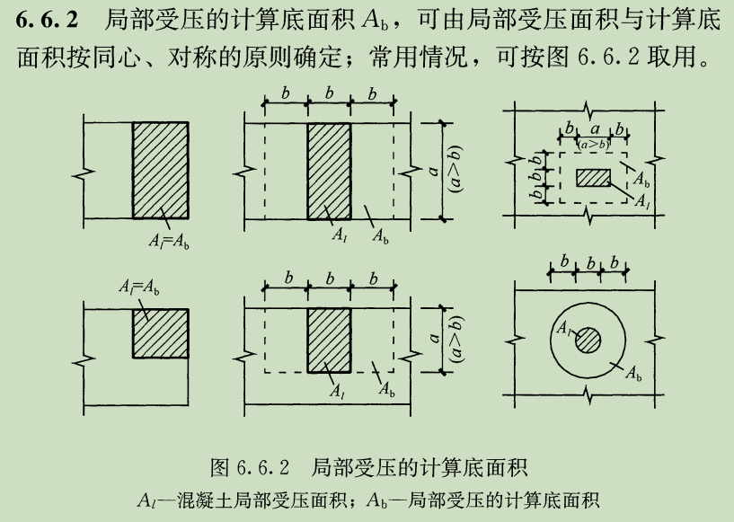

说明
计算依据
规范【1】：《混凝土结构设计规范》GB50010-2010
使用范围
当模板支架立柱支撑在混凝土构件上时，需要对混凝土构件作局部受压承载力验算。
其他说明
1、一般模板支架立柱底部均设置方形钢垫板，混凝土局部受压面积可用垫板的长度、宽度尺寸。
2、混凝土局部受压净面积，一般取立柱底部垫板面积；后张构件为垫板面积减去孔道或凹槽面积后的净面积。
3、模板支架立柱在混凝土构件上的位置，包括角部、边中部、中部三种情况。
计算相关公式及符号说明：
- βl计算式: \(β_{l}=\sqrt{\frac{A_b}{A_l}}\)
- Fl计算式: \(F_{l}\leq1.35β_{c}β_{l}f_{c}A_{ln}\)
- Ab含义：局部受压的计算底面积
- Al含义：混凝土局部受压面积
混凝土构件局部受压承载力计算

混凝土局部受压的计算底面积 (Ab): m2
混凝土局部受压承载力允许值 (Fl): kN